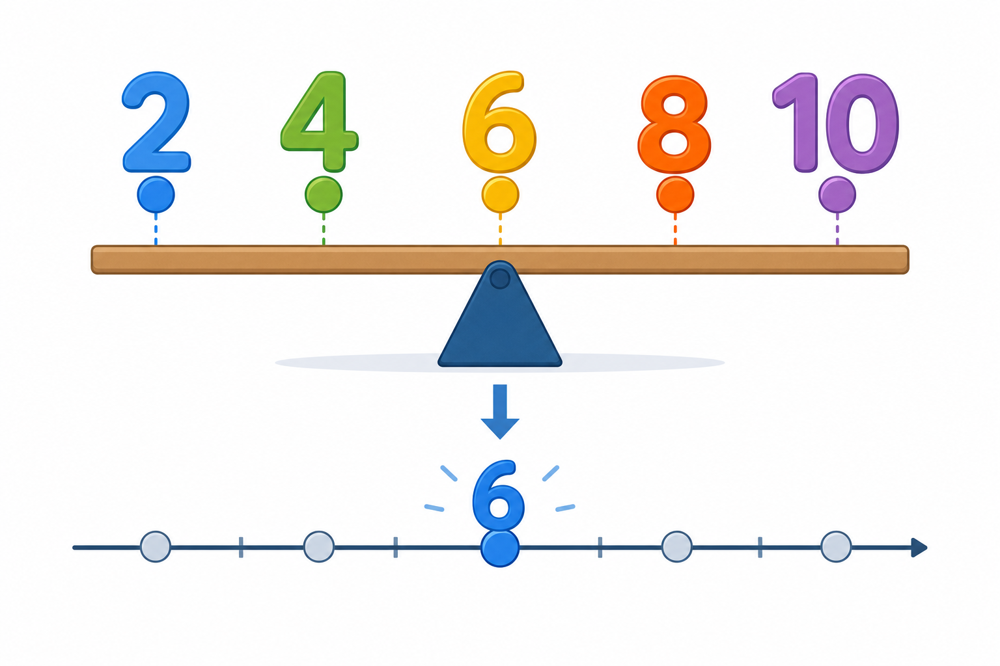

Co to jest? Що це?
Średnia arytmetyczna to „typowa” wartość: suma wszystkich danych podzielona przez ich liczbę.
Середнє арифметичне — «типове» значення: сума всіх даних, поділена на їхню кількість.
Jak w szkole? Як у школі?
Wzór: średnia = (suma wartości) / (ile wartości). Najpierw dodaj, potem podziel.
Формула: середнє = (сума значень) / (скільки значень). Спочатку додай, потім поділи.
Przykład z życia Приклад з життя
Oceny: 2,5,5,8. Średnia (2+5+5+8)/4=5 — „typowa” ocena.
Оцінки: 2,5,5,8. Середнє (2+5+5+8)/4=5 — «типова» оцінка.
suma ÷ liczba danych